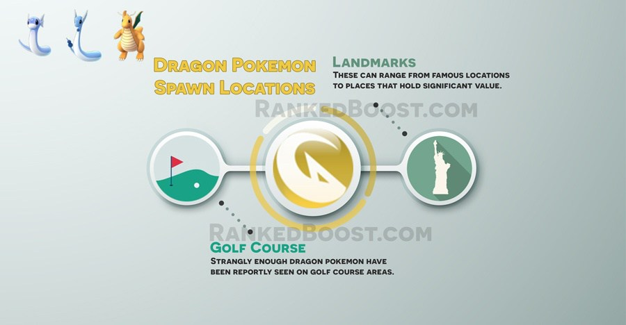

Where Do I Catch Dragon Pokemon In Pokemon Go: Dragon pokemon tend to spawn near landmarks or places of interest. Players are reporting dragon pokemon spawning around golf course areas.
How To Get DragonType Pokemon Tips:
Where Do I Find Dragon Pokemon? – ( Dragon Pokemon Locations )
Confirmed Dragon Pokemon Go Spawn Locations: Golf Course – Landmarks – Places of Interest
Unconfirmed Dragon Pokemon Go Spawn Locations:
There is a Total of 3 Pokemon Go Dragon Pokemon: Dratini, Dragonair and Dragonite.
